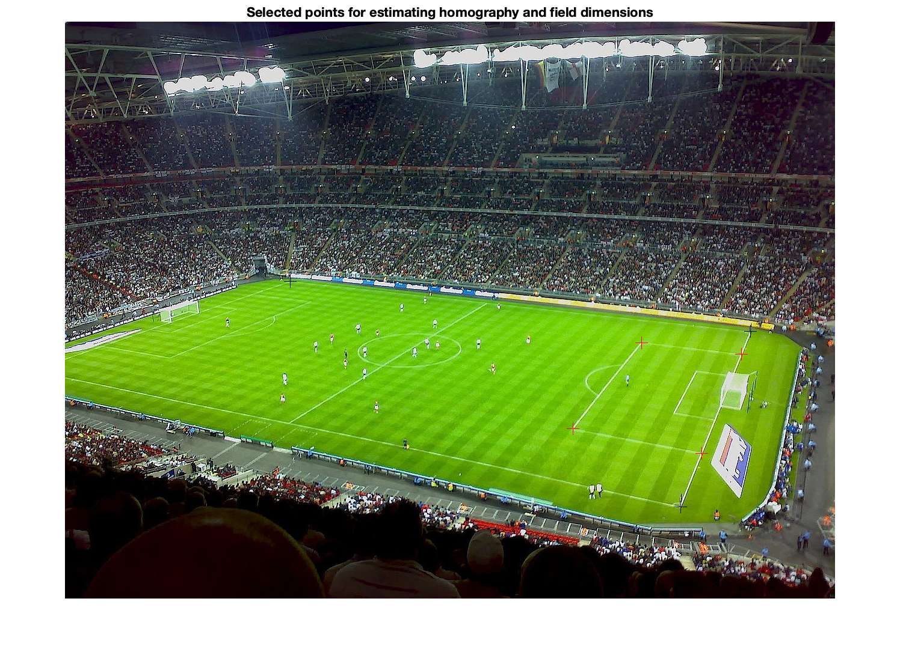
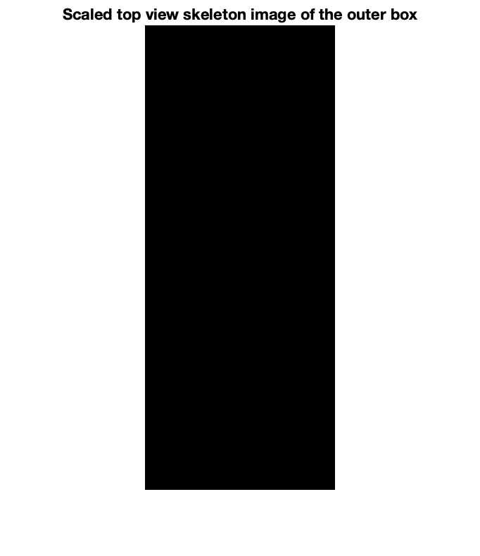

Contents
Load Data and visualize data
load('../input/Q2data.mat');
X1 = box_coords;
marked = insertMarker(im, X1, 'Color', 'red', 'Size', 10);
marked = insertMarker(marked, area_coords, 'Color', 'black', 'Size', 10);
imshow(marked);
title("Selected points for estimating homography and field dimensions");
scaling_factor = 15;
width = scaling_factor*width;
height = scaling_factor*height;
X2 = [0 0; width 0; 0 height; width height];
im_h = zeros(height, width);
figure;
imshow(im_h);
title("Scaled top view skeleton image of the outer box");
 
Estimate Homography matrix and find playing area dimensions
H = homography(X1, X2);
n = size(area_coords,1);
X = [area_coords'; ones(1,n)];
X_h = H*X;
pts = X_h(1:2,:)./X_h(3,:);
area_width = round(sqrt(sum((pts(:,2) - pts(:,1)).^2))/scaling_factor);
area_height = round(sqrt(sum((pts(:,3) - pts(:,2)).^2))/scaling_factor);
fprintf(1, "Playing area dimensions: %dyd x %dyd", area_width, area_height);
Playing area dimensions: 125yd x 74yd